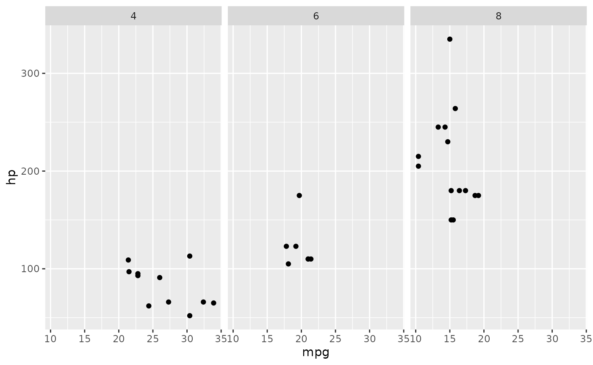
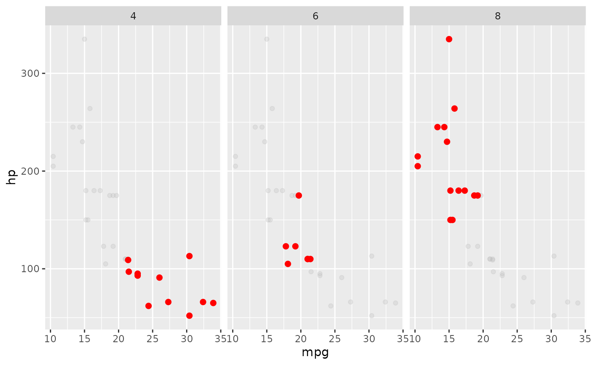

Dealing with sample names
separate takes a column containing multiple variables on input and returns multiple columns, each with a new variable. For example, a column with year/month/day information can be separated into invidual columns.
separate
dates
#> # A tibble: 120 x 1
#> date
#> <chr>
#> 1 1999-Feb-1
#> 2 1999-Feb-2
#> 3 1999-Feb-3
#> 4 1999-Feb-4
#> 5 1999-Feb-5
#> 6 1999-Feb-6
#> 7 1999-Feb-7
#> 8 1999-Feb-8
#> 9 1999-Feb-9
#> 10 1999-Feb-10
#> # ... with 110 more rows
# separate is the inverse of unite
dates %>% separate(date, into = c('year', 'month', 'day'), sep = '-')
#> # A tibble: 120 x 3
#> year month day
#> <chr> <chr> <chr>
#> 1 1999 Feb 1
#> 2 1999 Feb 2
#> 3 1999 Feb 3
#> 4 1999 Feb 4
#> 5 1999 Feb 5
#> 6 1999 Feb 6
#> 7 1999 Feb 7
#> 8 1999 Feb 8
#> 9 1999 Feb 9
#> 10 1999 Feb 10
#> # ... with 110 more rowsThe sep argument can take:
- a character (split
rep_valueusingsep = '_'intorepandvalue) - a position (split
a1usingsep = 1intoaand1)
Finally the extra and fill arguments to separate control what happens when there are too many and not enough variables.
crossing
crossing is useful for generating combinations of variables in tibble format. For example, use crossing to generate combinations of experimental varaibles including sample names, gene names, reaction conditions, and replicates.
genotype <- c('wt', 'mut')
gene <- c('IFN', 'ACTIN')
time <- c(0, 12, 24, 48)
rt <- c('+', '-') # reverse transcriptase added?
rep <- 1:3
samples <- tidyr::crossing(genotype, gene, time, rep, rt)
samples
#> # A tibble: 96 x 5
#> genotype gene time rep rt
#> <chr> <chr> <dbl> <int> <chr>
#> 1 mut ACTIN 0 1 -
#> 2 mut ACTIN 0 1 +
#> 3 mut ACTIN 0 2 -
#> 4 mut ACTIN 0 2 +
#> 5 mut ACTIN 0 3 -
#> 6 mut ACTIN 0 3 +
#> 7 mut ACTIN 12 1 -
#> 8 mut ACTIN 12 1 +
#> 9 mut ACTIN 12 2 -
#> 10 mut ACTIN 12 2 +
#> # ... with 86 more rowsData in the 96-well plate format.
Now we’ll use tidy data principles to analyze some qPCR data.
Many biological assays make use of the 96 (or 384) well plate. Note the similarity between the plate and a tibble: there are rows and columns, and each well contains a reaction that will generate one or more data points.

plate
Sample names
All variables should be systematically listed in your sample names, i.e. name_rep_time_RT. Systematic naming makes it easy to extract relevant information.
Take this example, where the sample names are a combination of a genotype (WT and MT), a time point (0,4,8,24 hour), and a replicate (1,2,3), separated by a hyphen.
library(tidyverse)
# for reproducible `sample`
set.seed(47681)
samples <-
tidyr::crossing(
name = c('WT', 'MT'),
hours = c('t0', 't4', 't8', 't24'),
reps = 1:3
) %>%
mutate(
value = sample(1:100, n(), replace = TRUE),
.id = row_number()
) %>%
unite('sample.name', name, hours, reps, sep = '-') %>%
select(-.id)
samples
#> # A tibble: 24 x 2
#> sample.name value
#> <chr> <int>
#> 1 MT-t0-1 81
#> 2 MT-t0-2 35
#> 3 MT-t0-3 89
#> 4 MT-t24-1 32
#> 5 MT-t24-2 24
#> 6 MT-t24-3 62
#> 7 MT-t4-1 67
#> 8 MT-t4-2 14
#> 9 MT-t4-3 49
#> 10 MT-t8-1 94
#> # ... with 14 more rowsExtracting sample names
Because the samples have systematic names, it is easy to separate this information into individual columns.
sample_info <- samples %>%
tidyr::separate(
sample.name,
into = c('sample', 'hour', 'rep'),
sep = "-"
)
sample_info
#> # A tibble: 24 x 4
#> sample hour rep value
#> <chr> <chr> <chr> <int>
#> 1 MT t0 1 81
#> 2 MT t0 2 35
#> 3 MT t0 3 89
#> 4 MT t24 1 32
#> 5 MT t24 2 24
#> 6 MT t24 3 62
#> 7 MT t4 1 67
#> 8 MT t4 2 14
#> 9 MT t4 3 49
#> 10 MT t8 1 94
#> # ... with 14 more rowsData manipulation
Now we can use dplyr and tidyr functions to manipulate the data.
# calculate summary statistics
sample_info %>% group_by(sample, hour) %>% summarize(mean(value))
#> # A tibble: 8 x 3
#> # Groups: sample [?]
#> sample hour `mean(value)`
#> <chr> <chr> <dbl>
#> 1 MT t0 68.3
#> 2 MT t24 39.3
#> 3 MT t4 43.3
#> 4 MT t8 51.3
#> 5 WT t0 52.7
#> 6 WT t24 76.3
#> 7 WT t4 55
#> 8 WT t8 42.3
# subtract a background value. N.B.: rearranging the table makes this calculation easy.
sample_info %>% spread(hour, value) %>% mutate(t24_norm = t24 - t0)
#> # A tibble: 6 x 7
#> sample rep t0 t24 t4 t8 t24_norm
#> <chr> <chr> <int> <int> <int> <int> <int>
#> 1 MT 1 81 32 67 94 -49
#> 2 MT 2 35 24 14 27 -11
#> 3 MT 3 89 62 49 33 -27
#> 4 WT 1 97 79 3 72 -18
#> 5 WT 2 45 80 97 12 35
#> 6 WT 3 16 70 65 43 54qPCR data
The class library provides two related tibbles that describe a simulated qPCR experiment called qpcr_names and qpcr_data.
library(pbda)
qpcr_names
#> # A tibble: 8 x 13
#> row `1` `2` `3` `4` `5` `6` `7` `8` `9` `10` `11`
#> <chr> <chr> <chr> <chr> <chr> <chr> <chr> <chr> <chr> <chr> <chr> <chr>
#> 1 A mut_0… mut_… mut_… mut_… mut_… mut_… wt_0… wt_0… wt_1… wt_2… wt_2…
#> 2 B mut_0… mut_… mut_… mut_… mut_… mut_… wt_0… wt_0… wt_1… wt_2… wt_2…
#> 3 C mut_0… mut_… mut_… mut_… mut_… mut_… wt_0… wt_0… wt_1… wt_2… wt_2…
#> 4 D mut_0… mut_… mut_… mut_… mut_… mut_… wt_0… wt_0… wt_1… wt_2… wt_2…
#> 5 E mut_0… mut_… mut_… mut_… mut_… mut_… wt_0… wt_1… wt_1… wt_2… wt_4…
#> 6 F mut_0… mut_… mut_… mut_… mut_… mut_… wt_0… wt_1… wt_1… wt_2… wt_4…
#> 7 G mut_0… mut_… mut_… mut_… mut_… mut_… wt_0… wt_1… wt_1… wt_2… wt_4…
#> 8 H mut_0… mut_… mut_… mut_… mut_… mut_… wt_0… wt_1… wt_1… wt_2… wt_4…
#> # ... with 1 more variable: `12` <chr>
qpcr_data
#> # A tibble: 8 x 13
#> row `1` `2` `3` `4` `5` `6` `7` `8` `9` `10` `11`
#> <chr> <dbl> <dbl> <dbl> <dbl> <dbl> <dbl> <dbl> <dbl> <dbl> <dbl> <dbl>
#> 1 A 2.6 10.5 9.2 20 146. 83.6 2.4 10.5 10.4 19 146.
#> 2 B 0 0 0 0 0 0 0 0 0 0 0
#> 3 C 1.6 16.5 79.5 20 146. 680. 1.2 12 78 19.2 144
#> 4 D 0 0 0 0 0 0 0 0 0 0 0
#> 5 E 2.8 11 79.5 19.8 105 663 2 9 69 19.8 71
#> 6 F 0 0 0 0 0 0 0 0 0 0 0
#> 7 G 12 9.8 78 144 116 774 22.5 11 73.5 146. 118.
#> 8 H 0 0 0 0 0 0 0 0 0 0 0
#> # ... with 1 more variable: `12` <dbl>We will use tidying concepts to prepare this data for efficient analysis and visualization.
qPCR data tidying
- Tidy
qpcr_dataandqpcr_namesinto a structure like:
#> # A tibble: 96 x 3
#> row col exp
#> <chr> <chr> <dbl>
#> 1 A 1 2.6
#> 2 B 1 0
#> 3 C 1 1.6
#> 4 D 1 0
#> 5 E 1 2.8
#> 6 F 1 0
#> 7 G 1 12
#> 8 H 1 0
#> 9 A 2 10.5
#> 10 B 2 0
#> # ... with 86 more rowsSample names
- Separate variables into new columns in
qpcr_names_tidy.
#> # A tibble: 96 x 7
#> row col sample time gene rt rep
#> <chr> <chr> <chr> <chr> <chr> <chr> <chr>
#> 1 A 1 mut 0 ACTIN + 1
#> 2 B 1 mut 0 ACTIN - 1
#> 3 C 1 mut 0 ACTIN + 2
#> 4 D 1 mut 0 ACTIN - 2
#> 5 E 1 mut 0 ACTIN + 3
#> 6 F 1 mut 0 ACTIN - 3
#> 7 G 1 mut 0 IFN + 1
#> 8 H 1 mut 0 IFN - 1
#> 9 A 2 mut 0 IFN + 2
#> 10 B 2 mut 0 IFN - 2
#> # ... with 86 more rowsData joining
- Join the tidied data together.
#> Joining, by = c("row", "col")
#> # A tibble: 96 x 8
#> row col sample time gene rt rep exp
#> <chr> <chr> <chr> <chr> <chr> <chr> <chr> <dbl>
#> 1 A 1 mut 0 ACTIN + 1 2.6
#> 2 B 1 mut 0 ACTIN - 1 0
#> 3 C 1 mut 0 ACTIN + 2 1.6
#> 4 D 1 mut 0 ACTIN - 2 0
#> 5 E 1 mut 0 ACTIN + 3 2.8
#> 6 F 1 mut 0 ACTIN - 3 0
#> 7 G 1 mut 0 IFN + 1 12
#> 8 H 1 mut 0 IFN - 1 0
#> 9 A 2 mut 0 IFN + 2 10.5
#> 10 B 2 mut 0 IFN - 2 0
#> # ... with 86 more rowsStatistical summary
- Calculate summary statistics for each gene, cell and time point across replicates.
qpcr_tidy %>%
filter(rt == "+") %>%
group_by(sample, gene, time) %>%
summarize(mean_exp = mean(exp), var_exp = var(exp))
#> # A tibble: 16 x 5
#> # Groups: sample, gene [?]
#> sample gene time mean_exp var_exp
#> <chr> <chr> <chr> <dbl> <dbl>
#> 1 mut ACTIN 0 2.33 0.413
#> 2 mut ACTIN 12 10 0.840
#> 3 mut ACTIN 24 19.9 0.0133
#> 4 mut ACTIN 48 102. 271.
#> 5 mut IFN 0 13 9.75
#> 6 mut IFN 12 79 0.75
#> 7 mut IFN 24 145 0.75
#> 8 mut IFN 48 706. 3587.
#> 9 wt ACTIN 0 1.87 0.373
#> 10 wt ACTIN 12 10.1 1.05
#> 11 wt ACTIN 24 19.3 0.173
#> 12 wt ACTIN 48 101. 673.
#> 13 wt IFN 0 15 42.8
#> 14 wt IFN 12 73.5 20.2
#> 15 wt IFN 24 145 0.75
#> 16 wt IFN 48 780. 9633Plots
Plot the expression for each gene over time.
Calculate a fold-change for IFN over ACTIN and re-plot.

Rmarkdown
Code Chunks
Chunk options control the behaviour of code chunks. Some useful settings:
Show but don’t run code with
eval = FALSE. Useful if you have chunk that is failing but want to build the rest of the document.Suppress messages with
message = FALSEand warnings withwarnings = FALSE
Code folding lets you embed collapsible code chunks in your rendered HTML document. Please use this for your assignments.
Organize your code blocks for easy reading.. 80 characters per line, and break pipes into pieces.
Making quality plots
Figure legends
- Figure legends can be added using the
fig.cap=chunk option.
library(tidyverse)
iris %>% ggplot(aes(Sepal.Length, Sepal.Width)) + geom_point() + facet_grid(~Species)
Figure 1. Simple Sepal analysis. Setosa appears to have a stronger correlation than the other two species.
Figure titles
ggplot(mtcars, aes(x = mpg, y = hp, color = factor(am))) +
geom_point() +
ggtitle("Motor Trend Cars (colored by transmision type)")
Color
Palettes
- colorbrewer The colorbrewer palettes are packaged with ggplot2. They include palettes for both discrete and continuous data.
p <- ggplot(iris, aes(x = Petal.Width, y = Petal.Length)) +
geom_point(size = 5, aes(color = factor(Species)))
p + scale_color_brewer(palette = 'Set1')
- viridis The viridis library contains some visually appealing palettes that are color-blind-friendly.


Themes
The cowplot package provides a variety of sane defaults for your plots. These are especially useful when making publication-quality figures.
# install.packages('cowplot')
library(cowplot)
#>
#> Attaching package: 'cowplot'
#> The following object is masked from 'package:ggplot2':
#>
#> ggsave
ggplot(mtcars, aes(x = mpg, y = hp)) + geom_point() + facet_grid(~cyl)
# note the formatting of the `geom_point` section
ggplot(mtcars, aes(x = mpg, y = hp)) +
facet_grid(~cyl) +
geom_point(
data = mtcars %>% select(-cyl),
color = "grey",
alpha = 0.3
) +
geom_point(color = 'red', size = 2)
Tables
The DT library provides dynamic table with search capabilities.
knitr::kable() will display a static table.
| mpg | cyl | disp | hp | drat | wt | qsec | vs | am | gear | carb | |
|---|---|---|---|---|---|---|---|---|---|---|---|
| Mazda RX4 | 21.0 | 6 | 160.0 | 110 | 3.90 | 2.620 | 16.46 | 0 | 1 | 4 | 4 |
| Mazda RX4 Wag | 21.0 | 6 | 160.0 | 110 | 3.90 | 2.875 | 17.02 | 0 | 1 | 4 | 4 |
| Datsun 710 | 22.8 | 4 | 108.0 | 93 | 3.85 | 2.320 | 18.61 | 1 | 1 | 4 | 1 |
| Hornet 4 Drive | 21.4 | 6 | 258.0 | 110 | 3.08 | 3.215 | 19.44 | 1 | 0 | 3 | 1 |
| Hornet Sportabout | 18.7 | 8 | 360.0 | 175 | 3.15 | 3.440 | 17.02 | 0 | 0 | 3 | 2 |
| Valiant | 18.1 | 6 | 225.0 | 105 | 2.76 | 3.460 | 20.22 | 1 | 0 | 3 | 1 |
| Duster 360 | 14.3 | 8 | 360.0 | 245 | 3.21 | 3.570 | 15.84 | 0 | 0 | 3 | 4 |
| Merc 240D | 24.4 | 4 | 146.7 | 62 | 3.69 | 3.190 | 20.00 | 1 | 0 | 4 | 2 |
| Merc 230 | 22.8 | 4 | 140.8 | 95 | 3.92 | 3.150 | 22.90 | 1 | 0 | 4 | 2 |
| Merc 280 | 19.2 | 6 | 167.6 | 123 | 3.92 | 3.440 | 18.30 | 1 | 0 | 4 | 4 |
| Merc 280C | 17.8 | 6 | 167.6 | 123 | 3.92 | 3.440 | 18.90 | 1 | 0 | 4 | 4 |
| Merc 450SE | 16.4 | 8 | 275.8 | 180 | 3.07 | 4.070 | 17.40 | 0 | 0 | 3 | 3 |
| Merc 450SL | 17.3 | 8 | 275.8 | 180 | 3.07 | 3.730 | 17.60 | 0 | 0 | 3 | 3 |
| Merc 450SLC | 15.2 | 8 | 275.8 | 180 | 3.07 | 3.780 | 18.00 | 0 | 0 | 3 | 3 |
| Cadillac Fleetwood | 10.4 | 8 | 472.0 | 205 | 2.93 | 5.250 | 17.98 | 0 | 0 | 3 | 4 |
| Lincoln Continental | 10.4 | 8 | 460.0 | 215 | 3.00 | 5.424 | 17.82 | 0 | 0 | 3 | 4 |
| Chrysler Imperial | 14.7 | 8 | 440.0 | 230 | 3.23 | 5.345 | 17.42 | 0 | 0 | 3 | 4 |
| Fiat 128 | 32.4 | 4 | 78.7 | 66 | 4.08 | 2.200 | 19.47 | 1 | 1 | 4 | 1 |
| Honda Civic | 30.4 | 4 | 75.7 | 52 | 4.93 | 1.615 | 18.52 | 1 | 1 | 4 | 2 |
| Toyota Corolla | 33.9 | 4 | 71.1 | 65 | 4.22 | 1.835 | 19.90 | 1 | 1 | 4 | 1 |
| Toyota Corona | 21.5 | 4 | 120.1 | 97 | 3.70 | 2.465 | 20.01 | 1 | 0 | 3 | 1 |
| Dodge Challenger | 15.5 | 8 | 318.0 | 150 | 2.76 | 3.520 | 16.87 | 0 | 0 | 3 | 2 |
| AMC Javelin | 15.2 | 8 | 304.0 | 150 | 3.15 | 3.435 | 17.30 | 0 | 0 | 3 | 2 |
| Camaro Z28 | 13.3 | 8 | 350.0 | 245 | 3.73 | 3.840 | 15.41 | 0 | 0 | 3 | 4 |
| Pontiac Firebird | 19.2 | 8 | 400.0 | 175 | 3.08 | 3.845 | 17.05 | 0 | 0 | 3 | 2 |
| Fiat X1-9 | 27.3 | 4 | 79.0 | 66 | 4.08 | 1.935 | 18.90 | 1 | 1 | 4 | 1 |
| Porsche 914-2 | 26.0 | 4 | 120.3 | 91 | 4.43 | 2.140 | 16.70 | 0 | 1 | 5 | 2 |
| Lotus Europa | 30.4 | 4 | 95.1 | 113 | 3.77 | 1.513 | 16.90 | 1 | 1 | 5 | 2 |
| Ford Pantera L | 15.8 | 8 | 351.0 | 264 | 4.22 | 3.170 | 14.50 | 0 | 1 | 5 | 4 |
| Ferrari Dino | 19.7 | 6 | 145.0 | 175 | 3.62 | 2.770 | 15.50 | 0 | 1 | 5 | 6 |
| Maserati Bora | 15.0 | 8 | 301.0 | 335 | 3.54 | 3.570 | 14.60 | 0 | 1 | 5 | 8 |
| Volvo 142E | 21.4 | 4 | 121.0 | 109 | 4.11 | 2.780 | 18.60 | 1 | 1 | 4 | 2 |